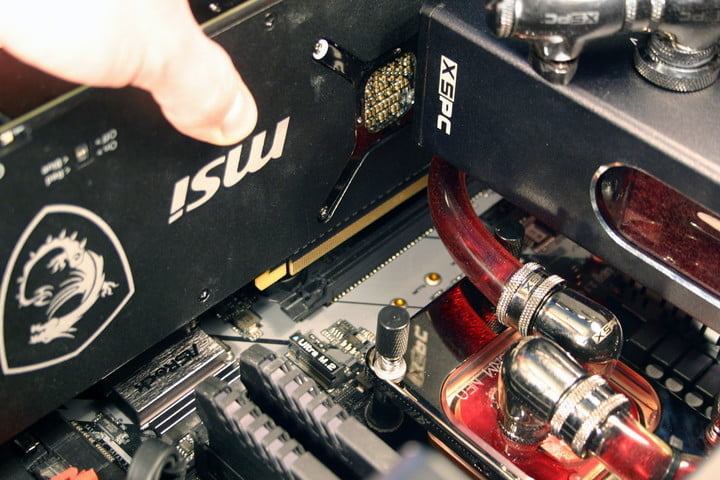
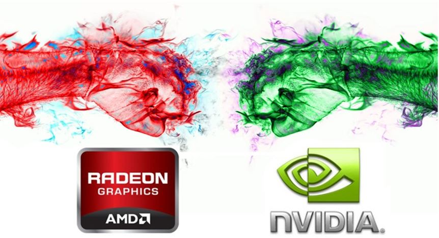

Tarjeta Grafica
Página web para el trabajo de Sistemas informáticos y Lenguaje de Marcas
¿Que es una tarjeta gráfica?
La tarjeta gráfica o también llamada tarjeta de video, adaptador de pantalla o GPU (Graphic Processing Unit) es uno de los componentes más importantes de nuestro pc ya que es la encagarda de procesar los datos que le envía el procesador y transformarlos en información visible mediante un monitor. Es decir, es la que hace posible todo lo que vemos en pantalla.
Tipos
Tarjetas Gráficas Integradas
Las tarjetas graficas integradas son aquellas cuyo chip se encuentra denro del procesador. Estas gráficas suelen ofrecer un rendimiento bastante limitado y también suelen ser bastante más baratas por lo que normalmente nos las encontramos en los ordenadores más económicos.
Tarjetas Gráficas Dedicadas
Las tarjetas gráficas dedicadas, sin embargo, estan instaladas de forma independiente en la placa base. Tiene sus propias GPUs, memoria de vídeo, salida grafica y sistema de refrigeración. Tienen un rendimiento muy superior al de las tarjetas graficas integradas, pero también son mas caras.
Funcionamiento
Internamente, el procesador de la gpu trabaja en compañerismo con el procesador de tu ordenador, aligerando la carga de información de este ultimo para que pueda hacer su trabajo de manera más eficiente. Recuerden que la GPU trabaja solo con gráficos aligerando la carga de información del CPU. Entonces, ambos serían esencialmente procesadores, solo que con diferencias claras. Por ejemplo, programas como Adobe Premire Pro CC se beneficia de usar la tecnología CUDA de las tarjetas gráficas para maximizar el rendimiento. Por ejemplo, lo que antes se tardaba 40 minutos, ahora se tarda 8 minutos. La diferencia principal en la arquitectura de cada una, a pesar de que el GPU está diseñado para calcular la información gráfica, estando más preparado que un procesador convencional, sin embargo a la hora de realizar tareas, no son tan buenas. Aunque muchas se usan también (sobretodo AMD) para el minado de bitcoins.
Otro de los puntos más interesantes a conocer es el uso del filtro antiliasing. ¿Para qué sirve? Básicamente combina distintos puntos que se han calculado para representar una imagen final en tu pantalla. Mejorando así la calidad de la imagen. Entonces, ¿Qué es Rasterizar una imagen? Cada triángulo realiza una verificación que corrige los píxeles que lo componente. Es decir, tendremos un buffer y un triángulo que mostrará ese punto. Entrando un poco a la historia de las tarjetas gráficas…. Una de las primeras tarjetas gráficas en salir al mercado fue iSBX 275 de Intel en 1983, siendo así, una de las primeras computadoras en trabajar con GPU. Desde ese momento ha habido una invaluable cantidad de mejoras en tema de capacidad en estos co-procesadores. Gráficas míticas fueron la famosísima Voodo 3DFX, la GT8800, las calentorras GTX 480 o las recientes GTX 1080.
Instalación
Paso 1: Retira la tarjeta gráfica antigua
Si tienes una tarjeta gráfica antigua en tu PC, debes quitarla antes de instalar la nueva. Si estás comenzando desde cero, continúa con el siguiente paso de nuestra guía sobre cómo instalar una tarjeta gráfica. Primero debes retirar los cables de alimentación, si es que los tiene. Deberían estar ubicados cerca del final de la tarjeta y, por lo general, tendrán un pasador de presión que deberás apretar para poder liberarlos. A continuación, deberás quitar los tornillos que lo sujetan a la placa posterior de PCI Express. Usa tus dedos (si son tornillos) o un destornillador para quitarlos, y guárdalos, ya que los necesitaremos para instalar la nueva GPU. El último paso es liberar el mecanismo de clip que la mayoría de las placas base utilizan para mantener una tarjeta en su lugar. Está ubicado debajo de la tarjeta, al final de la ranura PCI Express. Revisa exhaustivamente, ya que algunos requieren presionar y otros se mueven hacia el costado. Si no puedes verlo adecuadamente debido a que la tarjeta estorba, prueba si es posible aflojarla con el tacto. De todos modos, podrás buscar en línea tu placa base para obtener una buena idea de cómo se ve. Una vez que el clip esté suelto, levanta con cuidado la tarjeta de la ranura PCI Express. A veces, una tarjeta se puede atascar en la parte posterior de PCI Express debido a la forma en que está diseñado el espacio, así que no te preocupes por darle un pequeño tirón a la tarjeta para liberarla. Cuando retires la tarjeta, asegúrate de colocarla en una superficie que no sea eléctricamente conductora. Lo ideal es ponerla dentro de una bolsa antiestática.
Paso 2: Retira la placa PCI Express
No puedes instalar una nueva tarjeta gráfica sin dejar espacio en la placa de respaldo de PCI Express. Si quitaste tu tarjeta gráfica antigua, es probable que haya suficiente espacio, pero si no lo hiciste o si tu nueva GPU es más grande que la anterior, es posible que también debas quitar una o dos placas posteriores. Revisa tu tarjeta gráfica nueva e incluso ubícala en la ranura PCI Express en la que deseas instalarla. Por lo general, es el espacio más ‘superior’ de la placa (si no estás seguro, consulta el manual de la placa o busca información en línea). Calcula cuántas ranuras PCI Express necesitarás y usa tus dedos o un destornillador para eliminar la cantidad necesaria de placas posteriores. Guárdalos en algún lugar seguro, ya que nunca sabrás si puedes necesitarlos nuevamente en el futuro.
Paso 3: Conecta la nueva tarjeta
Ahora que tienes espacio para tu nueva tarjeta gráfica, es hora de instalarla. El proceso es relativamente simple, pero puede ser un poco complicado dependiendo del tamaño de la carcasa de tu PC y si sus otros componentes obstruyen el acceso. En cualquier caso, colocarás tu tarjeta gráfica en la ranura PCI Express. Debes asegurarte de que la placa I/O en la parte posterior de las ranuras de la tarjeta esté correctamente ajustada en la PCI Express. El paso más importante que debes recordar aquí es que no necesitarás mucha fuerza para instalar. Sé firme, pero suave. Si descubres que no está insertado adecuadamente, retira la tarjeta y verifica si algo está obstruyendo la ranura PCI Express. Deberías escuchar un click cuando está instalada, pero puede que no sea el caso de todas las placas base. Cuando estés conforme con la instalación, debes colocar los tornillos de la placa posterior para mantenerla firmemente en su lugar. Si es necesario, puedes desplazar la tarjeta ligeramente en su ranura para ajustar mejor los tornillos.
Paso 4: Conecta los cables de alimentación
Localiza los cables correctos que necesitas. Pueden ser uno o dos conectores de alimentación PCI Express de 6 u 8 pines. Verifica que tengas los correctos, ya que usar el cable de alimentación incorrecto podría dañar los componentes. Cuando estés seguro, conéctalos a las ranuras correspondientes al final de tu nueva GPU. Debería escuchar un sonido que permitió encajar, pero puedes confirmar que están completamente enganchados dándoles un ligero tirón. Si están enchufados correctamente, no deberían moverse.
Paso 5: Pruébalo
El momento de la verdad para cualquier cambio de hardware de PC: ver si funciona. Verifica que hayas realizado todo correctamente y, antes de volver a armar todo el equipo, conecta el cable de alimentación, el teclado y el mouse y el monitor. Enciéndelo. Si ves una imagen, ¡felicitaciones, instalaste tu nueva tarjeta gráfica! Si no ves una imagen, no te preocupes, puede haber una explicación simple. El primer paso es verificar que hayas conectado correctamente los cables de alimentación. Si lo haces y la tarjeta definitivamente recibe alimentación (los ventiladores giran hacia arriba, las luces brillan), por lo que deberás repitir los pasos anteriores de nuestra guía sobre cómo instalar una tarjeta gráfica. Retira la tarjeta y vuélvela a colocar en la ranura para asegurarte de que esté conectada correctamente. También revisa la conexión entre tu monitor y la tarjeta gráfica. Confirma que el cable esté enchufado correctamente en ambos extremos. Si eso no funciona, puedes intentar reiniciar el CMOS/BIOS. También vale la pena comprobar que tu fuente de alimentación (PSU) sea lo suficientemente potente como para manejar tu nueva tarjeta gráfica. RealHardTechX es una excelente fuente de información al respecto.
Paso 6: Instalar controladores nuevos
Una vez que termines con el trabajo manual, llegó la hora de instalar algunos controles nuevos. Si aún no lo has hecho, desinstala los de tu antigua tarjeta gráfica. Incluso recomendamos usar una utilidad como Display Driver Uninstaller para que que sea un proceso más exhaustivo. Luego reinicia el sistema. Descarga los controles más recientes de Nvidia o de AMD, dependiendo de la marca de tu tarjeta gráfica, y ejecuta el instalador. Cuando hayas completado todos los pasos de la guía sobre cómo instalar una tarjeta gráfica, reinicia tu sistema nuevamente y estarás listo para comenzar a disfrutar.
Marcas
Desde el inicio en el mundo de graficas de alto rendimiento han liderado 2 marcas:
Nvidia: GeForce es la denominación comercial de las tarjetas gráficas basadas en las unidades de procesamiento gráfico (GPU) creadas por Nvidia a partir del año 1999. Hasta la actualidad, la serie GeForce ha conocido dieciséis generaciones desde su creación. Las versiones enfocadas a usuarios profesionales de estas tarjetas vienen bajo la denominación Quadro, e incluyen algunas características diferenciadoras a nivel de controladores. La competencia directa de GeForce es AMD con sus tarjetas Radeon.
AMD Radeon: La aventura de AMD en el mercado de las tarjetas gráficas empieza en el año 2006 con la compra de ATI. Durante los primeros años, AMD uso los diseños creados por ATI basados en la arquitectura TeraScale. Dentro de esta arquitectura encontramos las Radeon HD 2000, 3000, 4000, 5000 y 6000. Todas ellas fueron introduciendo pequeñas mejoras de forma continua para mejorar sus capacidades.
En graficas de bajo rendimiento encontramos marcas como Intel Graphics o AMD Vega:
Son gráficas integradas dentro de los propios procesadores que como comentamos en el apartado de “Tipos” sabemos que tienen un bajo rendimiento pero también un bajo coste.